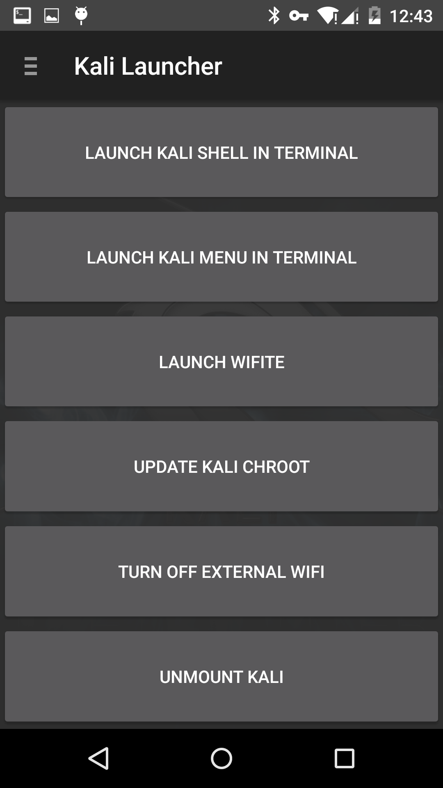

Kali NetHunter, a mobile penetration testing platform, has been out for a while. Among Chinese geeks, opinions on it have been mixed. Either way, I’d wanted to try NetHunter for a long time—after all, being able to do some “evil” things with a phone in certain situations feels a bit like Watch Dogs.
Installation
Device: Google Nexus 5
Android version: 5.1.1 LMY48l
NetHunter download page: https://www.kali.org/kali-linux-nethunter/
First, make sure the device is rooted and download the correct installer package for your model. I used TWRP as the recovery, installed via “TWRP Manager” from the Play Store. You can also download it yourself, then boot into fastboot (power off, hold Power + Volume Down) and flash it. adb_fastboot download
fastboot flash recovery twrp-2.8.7.1-hammerhead.img
Stock TWRP does not mount the System partition by default. Many people fail the installation because of this—before flashing, remember to go to Mount and mount System. Also ensure the System partition has enough free space; delete unused GApps if needed. Kali’s directory is:
/data/local/kali-armhf
I forgot that TWRP can take screenshots… so I ended up taking photos with another phone.

Bundled third-party apps
After booting: you can see 8 bundled apps.

DriveDroid: emulate an image on the phone as a boot drive.
BlueNMEA: used to obtain GPS NMEA data—but it doesn’t work on Nexus 5 (Lollipop), sadly.

Remote Desktop: used to connect to Windows (why is this another outdated app? It basically doesn’t work. I recommend using VNC instead. I used Microsoft’s RD Client. Unless you have a specific need, who would run a VNC server on Linux anyway?)
RF Analyzer: a spectrum analyzer. By connecting a HackRF, it samples RF signals and shows them as an FFT waterfall.
If you want to learn more, check out the HackRF Chinese forum.
The following two images are from GitHub:


USB Keyboard: as the name suggests, use USB to control a computer as a keyboard/mouse.
Shodan: an IoT search engine. It requires an API key; I don’t have one.
Hacker’s KeyBoard: makes it easier to input various control characters.
Using Kali
NetHunter Android: the real star of the show!
NetHunter Home: view local network interfaces and your public IP.

Kali Launcher: convenient entry points for various operations.
LAUNCH KALI SHELL IN TERMINAL Launch Kali shell
LAUNCH KALI MENU INTERMINAL Open Kali menu
LAUNCH WIFITE Start Wifite
UPDATE KALI CHROOT Update Kali
TURN OFF EXTERNAL WIFI Turn off external Wi-Fi
UNMOUNT KALI Unmount Kali

Kali Service Control: lots of service toggles live here.

Metasploit: typing is very inconvenient! But it works.


SSH: configuration is under:
/data/local/kali-armhf/etc/ssh
The built-in Wi-Fi card doesn’t seem to be supported. You’ll need an external Wi-Fi adapter via OTG to use the full set of wireless testing features.

My conclusion after playing with it: it’s fun to try, but many features feel a bit “meh” for casual users. Personally, the most enjoyable part is starting a VNC service, then using a VNC viewer on the phone so it feels like a desktop OS.
 CC BY-NC-SA 4.0
CC BY-NC-SA 4.0